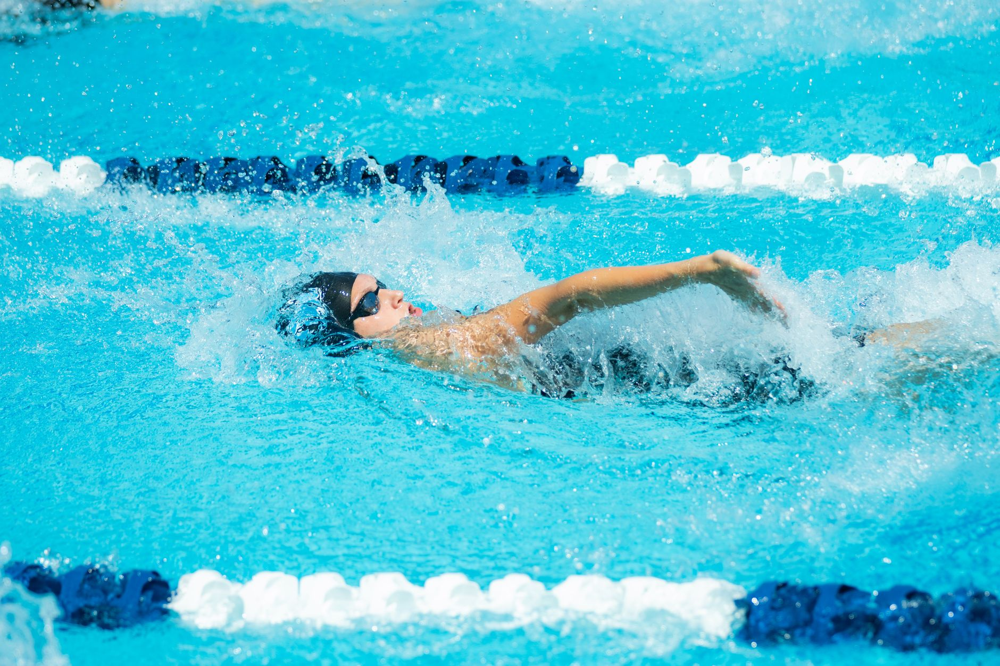

USA Swimming Names Its 2026–2027 National Junior Team — What This Means for Young Swimmers
USA Swimming recently announced its 2026–2027 U.S. National Junior Team roster, and the aquatic sports community is buzzing with excitement. This prestigious roster recognizes some of the most talented young competitive swimmers in the country — athletes who have dedicated years of hard work, discipline, and passion to reach the highest levels of junior competition. For parents and young athletes here in Wesley Chapel, Land O' Lakes, and throughout the Tampa Bay area, this announcement serves as both an inspiration and a roadmap.
What Is the U.S. National Junior Team?
The U.S. National Junior Team is a USA Swimming designation given to elite swimmers who demonstrate exceptional performance at the national level. Athletes on this roster represent the United States at international junior competitions and are widely regarded as the future of American swimming. Making this team is a significant milestone that typically follows years of structured training, consistent competition, and a deep commitment to improvement.
It is important for families to understand that the athletes named to this roster did not get there overnight. Behind every name on that list is a story of early mornings, careful coaching, smart nutrition, and a supportive team environment that helped them grow.
The Pathway Starts Early — and Locally
One of the most encouraging truths about elite swimming is that the journey often begins in community pools and local academies, not in Olympic training centers. Many of the country's top junior swimmers started exactly where your child is right now — learning technique, building endurance, and discovering a love for the water.
For young athletes in the Tampa Bay area, the opportunity to build that foundation is right here at home. At Nexar Aquatic Academy, swimmers in Wesley Chapel and Land O' Lakes train in a structured, athlete-centered environment designed to develop both skill and character. Whether a child is just beginning competitive swimming or is already chasing qualifying times, the right coaching makes an enormous difference in their long-term trajectory.
Key Qualities That Define Junior Elite Swimmers
Parents often ask what separates athletes who reach the national level from those who plateau early. While talent plays a role, coaches consistently point to a handful of qualities that matter even more over time:
- Technical precision: Elite swimmers obsess over the details — their stroke mechanics, turns, and starts are constantly refined.
- Consistency in training: Showing up every day, even on difficult days, builds the physical and mental foundation required for high-level competition.
- Coachability: Athletes who listen, adapt, and apply feedback improve far faster than those who resist instruction.
- Goal-setting habits: The best junior swimmers set both short-term and long-term goals and track their progress with intention.
- Resilience: Setbacks at meets, slow splits, and missed cuts are part of every swimmer's journey. Learning to respond rather than retreat is a defining trait.
How Tampa Bay Families Can Support Their Young Swimmers
Parents play a critical role in an athlete's development, and that role goes well beyond driving to practice. Creating a home environment that prioritizes rest, balanced nutrition, and positive self-talk gives young swimmers the best possible chance to thrive. Celebrating effort and progress — not just results — helps athletes develop the internal motivation that sustains long careers.
If your child is passionate about swimming and you are curious about what competitive pathways look like, we encourage you to connect with the team at Nexar Aquatic Academy. Our coaches are committed to guiding every swimmer — at every level — toward their personal best.
The Next National Junior Team Could Include a Tampa Bay Swimmer
The 2026–2027 U.S. National Junior Team roster is a celebration of what is possible. It is proof that young athletes who commit to the process can rise to represent their country. The athletes being recognized today were once beginners with big dreams, and the young swimmers training in Wesley Chapel and Land O' Lakes right now deserve to dream just as boldly. The journey starts in the water — and it starts today.
Ready to get in the water?
First practice is completely FREE — no commitment needed.